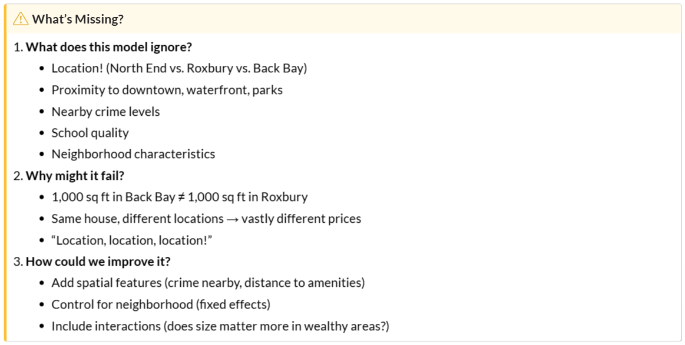
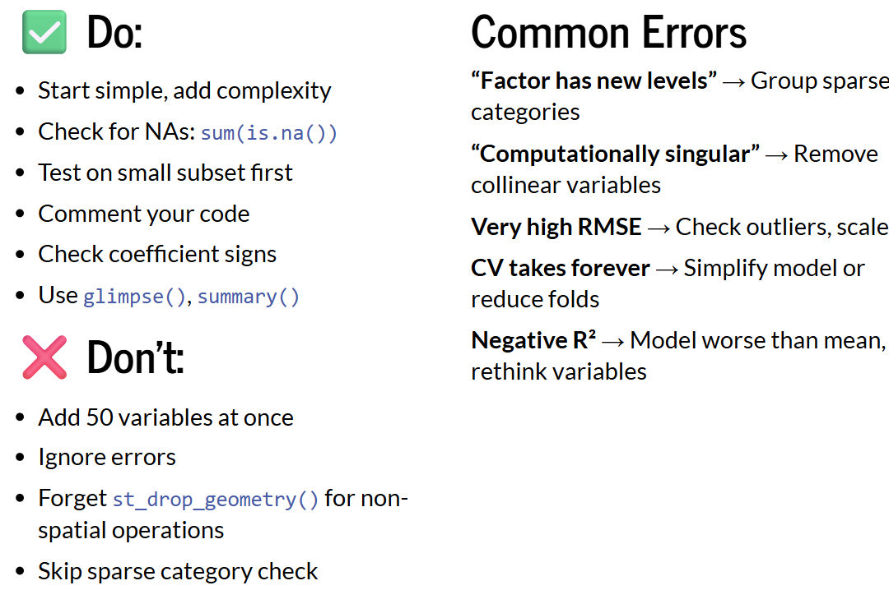
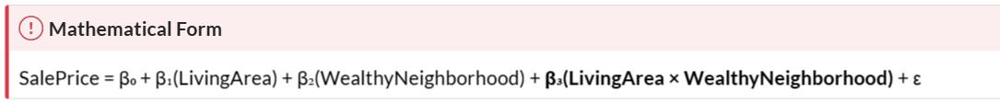
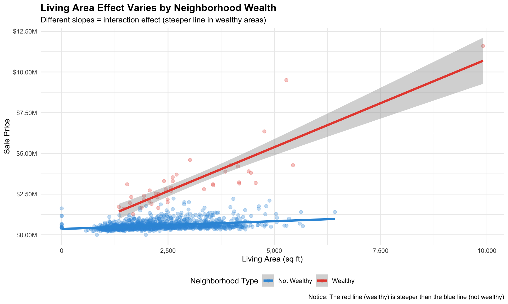
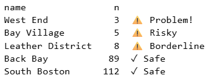

Continuous: square feet, age of house, income levels, distance to downtown
Categorical: neighborhood, school district, building type, has garage (binary Y/N)
Limitations of Models using only Baseline Indicators

Fixed Effects
Definition: Categorical variables that capture all unmeasured characteristics of a group
Powerful but they’re a black box
Neighborhoods bundle many unmeasured factors (e.g. school districts, job access, amenities, “cool factor”)
Three Approaches to Spatial Features
Buffer Aggregation
kNN
Distance to Specific Points
Tips for Success

Coding Techniques
Make Data with X/Y Coordinates Spatial
Code
# Convert boston data to sf objectboston.sf <- boston |>st_as_sf(coords =c("Longitude", "Latitude"), crs =4326) |>st_transform('ESRI:102286') # MA State Plane (feet)# Spatial join: Assign each house to its neighborhoodboston.sf <- boston.sf |>st_join(nhoods, join = st_intersects)# Check resultsboston.sf |>st_drop_geometry() |>count(name) |>arrange(desc(n))
The n-1 rule: One neighborhood is automatically chosen as the reference category (omitted)! R picks the first alphabetically unless you specify otherwise.
Code
boston.sf <- boston.sf |>mutate(name =as.factor(name))# Fit model with neighborhood fixed effectsmodel_neighborhoods <-lm(SalePrice ~ LivingArea + name, data = boston.sf)
Interaction Effects


Code
# Define wealthy neighborhoods based on median priceswealthy_hoods <-c("Back Bay", "Beacon Hill", "South End", "Bay Village")# Create binary indicatorboston.sf <- boston.sf |>mutate(wealthy_neighborhood =ifelse(name %in% wealthy_hoods, "Wealthy", "Not Wealthy"),wealthy_neighborhood =as.factor(wealthy_neighborhood) )# Check the splitboston.sf |>st_drop_geometry() |>count(wealthy_neighborhood)
Polynomials – e.g. Square Age Variable because of U-Shaped Effect
New Houses (0-20 years): modern amenities, high value, steep depreciation
Middle-Aged (20-80 years): wear and tear, lowest value
# Calculate age from year builtboston.sf <- boston.sf |>mutate(Age =2025- YR_BUILT) |>filter(Age <2000)# Check the distribution of agesummary(boston.sf$Age)# Add Polynomial Term - use I(Age^2) for Quadratic Modelmodel_age_quad <-lm(SalePrice ~ Age +I(Age^2) + LivingArea, data = boston.sf)summary(model_age_quad)$coef# Compare Linear vs Quadratic Model in terms of R-squaredsummary(model_age_quad)$r.squared# Check Residual Plotpar(mfrow =c(1, 2))# Linear model residualsplot(fitted(model_age_linear), residuals(model_age_linear),main ="Linear Model Residuals",xlab ="Fitted Values", ylab ="Residuals")abline(h =0, col ="red", lty =2)# Quadratic model residuals plot(fitted(model_age_quad), residuals(model_age_quad),main ="Quadratic Model Residuals",xlab ="Fitted Values", ylab ="Residuals")abline(h =0, col ="red", lty =2)
The kNN feature with the strongest correlation tells us the relevant “zone of influence” for crime perception
Code
# Calculate distance matrix (houses to crimes)dist_matrix <-st_distance(boston.sf, crimes.sf)# Function to get mean distance to k nearest neighborsget_knn_distance <-function(dist_matrix, k) {apply(dist_matrix, 1, function(distances) {# Sort and take first k, then averagemean(as.numeric(sort(distances)[1:k])) })}# Create multiple kNN featuresboston.sf <- boston.sf %>%mutate(crime_nn1 =get_knn_distance(dist_matrix, k =1),crime_nn3 =get_knn_distance(dist_matrix, k =3),crime_nn5 =get_knn_distance(dist_matrix, k =5) )# Check resultssummary(boston.sf %>%st_drop_geometry() %>%select(starts_with("crime_nn")))# Which k value correlates most with price?boston.sf %>%st_drop_geometry() %>%select(SalePrice, crime_nn1, crime_nn3, crime_nn5) %>%cor(use ="complete.obs") %>%as.data.frame() %>%select(SalePrice)
Distance
Code
# Define downtown Boston (Boston Common: 42.3551° N, 71.0656° W)downtown <-st_sfc(st_point(c(-71.0656, 42.3551)), crs ="EPSG:4326") %>%st_transform('ESRI:102286')# Calculate distance from each house to downtownboston.sf <- boston.sf |>mutate(dist_downtown_ft =as.numeric(st_distance(geometry, downtown)),dist_downtown_mi = dist_downtown_ft /5280 )# Summarysummary(boston.sf$dist_downtown_mi)
Categories with n < 10 for categorical variables will likely cause CV problems

Code
# 1. Check category sizesboston.sf %>%st_drop_geometry() %>%count(name) %>%arrange(n) %>%print()# 2. Group small neighborhoods if neededboston.sf <- boston.sf %>%add_count(name) %>%mutate(name_cv =if_else(n <10, "Small_Neighborhoods", as.character(name)),name_cv =as.factor(name_cv) )# 3. Set up CVctrl <-trainControl(method ="cv", number =10)# 4. Use grouped neighborhoods in ALL models with FEmodel <-train( SalePrice ~ LivingArea + Age + crimes_500ft +as.factor(name_cv),data = boston.sf,method ="lm",trControl = ctrl)# 5. Reportcat("10-fold CV RMSE:", round(model$results$RMSE, 0), "\n")
Questions & Challenges
None for this week
Connections to Policy
Market Segmentation: property tax assessments should account for neighborhood-specific valuation. Housing assistance needs vary dramatically by area.
Reflection
Fixed Effects are powerful but they’re a black box. When I work on housing policy and housing markets, we often describe neighborhood fixed effects but I have never really quantified them.